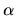
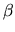
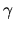

One method for determining the height achieved by a model rocket is to have three observers A, B and C equally spaced D feet apart along a line at one edge of the flat test field. Each observer has a theodolite or some other device for measuring angle above the horizontal of a distant object. Each measuring device is on a stand H feet above the field. When a rocket is fired, near the top of its flight, it deploys a parachute and emits a puff of dust. Each observer measures the angle above the horizontal of the puff of dust from their location. From these angles  for A,  for B and  for C, the height of the rocket above the field can be determined.
This problem is to write a program which, given the parameters D (the distance between observers along the line in feet), H (the distance of the measuring device above the field in feet), (the angle of the rocket above the horizontal in degrees measured by the leftmost observer A), (the angle above the horizontal in degrees observed by the center observer B) and (the angle above the horizontal in degrees measured by the rightmost observer C), computes the height of the rocket above the field in feet to the nearest foot.
The first line of input contains the parameters D and H in that order as decimal numbers (not necessarily integers). These values would be measured once at the beginning of the day and remain fixed through all rocket shots. Each succeeding line of input will contain the angles , and in that order (measured in degrees). The last line of input will contain at least one value less than or equal to zero. Other than the last line indicating the end of data all angles will be strictly between 0 and 90 degrees.
For each set of three angles (other than the end indicator), the output contains a line with the height above the field in feet (to the nearest foot) with no leading spaces. (Note: x.5 rounds up to x + 1.)
50 4 43.88 46.85 40.70 34.52 39.50 35.43 27.05 29.22 26.14 0 0 0
90 70 60